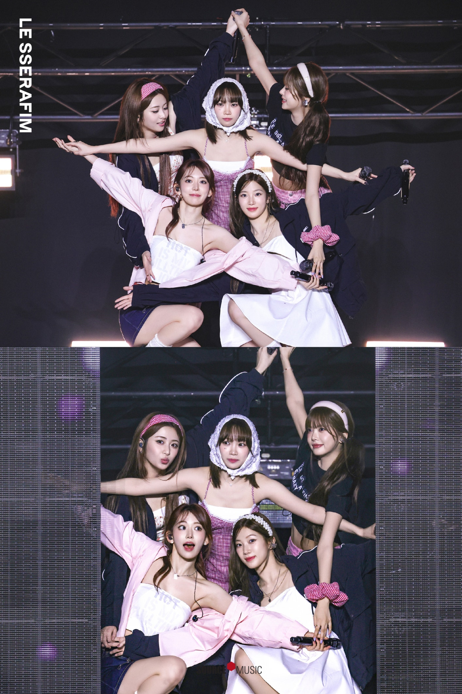

LE SSERAFIM
LE SSERAFIM（르세라핌）是 SOURCE MUSIC 於 2022 年推出的多國籍女子團體， 成員包含金采源、洪恩採、許允眞、宮脇咲良、中村一葉， 團名寓意「不被任何恐懼阻擋」，展現自信與力量。
🎬 代表作品
🎵 歷年歌曲
- 2022 - FEARLESS
- 2022 - ANTIFRAGILE
- 2023 - UNFORGIVEN
- 2023 - Eve, Psyche & The Bluebeard’s wife
- 2024 - PERFECT NIGHT / EASY / CRAZY
- 2025 - HOT

aespa
aespa 是 SM 娛樂於 2020 年推出的四人女團， 以獨特的「元宇宙世界觀」聞名， 成員包括 Karina、Giselle、Winter、Ningning。
🎬 代表作品
🎵 歷年歌曲
- 2020 - Black Mamba
- 2021 - Next Level / Savage
- 2022 - Girls
- 2023 - Spicy / Drama
- 2024 - Supernova / Whiplash
- 2025 - Dirty Work / Rich Man

NewJeans
NewJeans 是 ADOR 於 2022 年推出的五人女子團體， 以自然清新的音樂風格與潮流感， 成為新世代 K-pop 的代表。
🎬 代表作品
🎵 歷年歌曲
- 2022 - Attention / Hype Boy / Cookie
- 2023 - Ditto / OMG / Super Shy / ETA